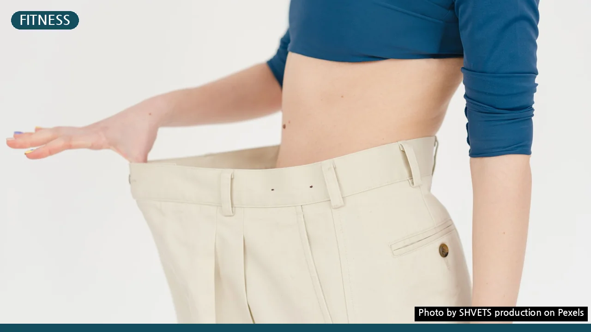
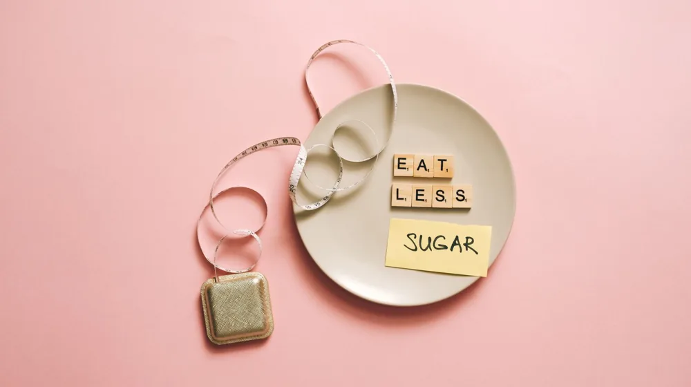

다이어트 정체기 벗어나고 싶다면? 놓치지 말아야 할 5가지 체크리스트
사진: SHVETS production / Pexels (무료 이미지, 출처 표기)
다이어트 정체기, 왜 찾아올까요? 내 몸의 똑똑한 방어 전략

열심히 노력해도 체중 감소가 멈추는 순간, 바로 다이어트 정체기입니다. 흔히 이 시기를 ‘몸이 버티는 기간’이라고 표현하는데, 이는 우리 몸이 변화에 적응하며 에너지를 효율적으로 사용하려는 자연스러운 현상입니다. 초기에는 칼로리 제한과 운동으로 빠르게 체중이 줄지만, 몸은 이 새로운 환경에 적응하며 기초대사량(생명 유지에 필요한 최소한의 에너지)을 낮추고 지방 축적 모드로 전환하려는 경향을 보입니다.
또한, 근육량이 증가하면서 체중계 숫자는 변하지 않거나 오히려 늘어날 수 있습니다. 근육은 지방보다 밀도가 높아 같은 부피라도 무게가 더 나가기 때문입니다. 이 외에도 수분 저류, 호르몬 변화, 스트레스 등 다양한 요인이 복합적으로 작용하여 정체기가 발생할 수 있습니다.
내 식단, 정말 괜찮을까? 놓치기 쉬운 칼로리 함정 점검
다이어트를 시작하며 식단을 철저히 지킨다고 생각했지만, 의외의 부분에서 숨은 칼로리를 섭취하고 있을 수 있습니다. 무심코 먹는 간식, 드레싱, 소스, 음료 등이 대표적인 예입니다. 다음 체크리스트를 통해 자신의 식단을 꼼꼼히 되돌아보고, 불필요한 칼로리 섭취를 줄여보세요.
- 음료 확인: 설탕이 든 커피, 주스, 탄산음료 대신 물이나 무가당 차를 마셨나요?
- 소스/드레싱 점검: 샐러드 드레싱, 마요네즈, 케첩 등 소스류는 고칼로리인 경우가 많습니다. 사용량을 줄이거나 저칼로리 제품으로 교체했나요?
- 숨은 간식: 견과류, 과일 등 건강한 간식이라도 과도하게 섭취하면 칼로리가 높아집니다. 양을 조절하고 있나요?
- 외식 메뉴 선택: 외식 시 튀김, 볶음 요리보다 찜, 구이, 삶은 요리를 선택하고 있나요?
- 정확한 기록: 섭취하는 모든 음식과 음료를 기록하여 객관적으로 식단을 평가하고 있나요?
식단 일기를 작성하면 본인이 인지하지 못했던 식습관을 파악하고 개선하는 데 큰 도움이 됩니다.
운동 루틴 점검: 몸이 익숙해진 변화가 필요할 때
몸이 특정 운동에 익숙해지면 같은 운동량으로도 예전만큼 칼로리를 소모하기 어려워집니다. 운동 정체기를 극복하기 위해서는 몸에 새로운 자극을 주어야 합니다. 현재의 운동 루틴을 다음 요소들을 중심으로 점검해보세요.
특히 근력 운동은 기초대사량을 높여 장기적인 체중 관리에 필수적입니다. 유산소 운동과 근력 운동을 병행하며 다양한 자극을 주는 것이 효과적입니다.
수면과 스트레스 관리: 숨겨진 정체기 주범들
다이어트 정체기의 원인은 식단이나 운동에만 국한되지 않습니다. 수면 부족과 스트레스는 다이어트 성공을 방해하는 강력한 요인입니다. 우리 몸은 잠이 부족하면 식욕 촉진 호르몬인 그렐린 분비가 늘어나고, 식욕 억제 호르몬인 렙틴 분비는 줄어듭니다. 이는 곧 과식으로 이어질 가능성을 높입니다.
또한, 스트레스는 코르티솔 호르몬 분비를 촉진하여 복부 지방 축적을 유도하고, 식욕을 증가시킬 수 있습니다. 하루 7~9시간의 충분한 수면을 취하고, 명상, 요가, 취미 활동 등을 통해 스트레스를 관리하는 것이 중요합니다. 건강한 생활 습관이 다이어트의 숨은 조력자가 될 수 있습니다.
정체기 극복을 위한 동기 부여 재설정 전략
정체기는 누구에게나 찾아올 수 있는 자연스러운 과정입니다. 이 시기를 현명하게 극복하려면 자신에게 맞는 동기 부여 전략을 세우는 것이 중요합니다. 다음 방법을 통해 다시금 목표를 향해 나아갈 힘을 얻어보세요.
- 숫자 아닌 다른 목표 설정: 체중계 숫자에 너무 연연하지 말고, 눈바디(몸매 변화), 옷 사이즈 변화, 체력 향상, 건강 지표 개선 등 다양한 목표를 설정해봅니다.
- 작은 성공 축하: 작은 목표라도 달성하면 자신에게 보상(음식 외)을 주며 성취감을 느껴보세요.
- 전문가와 상담: 필요하다면 영양사나 트레이너와 상담하여 전문가의 도움을 받는 것도 좋은 방법입니다.
- 커뮤니티 활용: 다이어트 커뮤니티나 그룹에 참여하여 정보와 경험을 공유하고 서로를 격려하며 동기 부여를 얻을 수 있습니다.
- 재충전의 시간: 잠시 다이어트의 압박에서 벗어나 휴식을 취하는 것도 도움이 될 수 있습니다.
다이어트 정체기는 실패의 신호가 아니라, 몸이 더욱 건강해지기 위한 다음 단계를 준비하는 과정일 수 있습니다. 꾸준함과 긍정적인 마음으로 이 시기를 현명하게 극복하시길 바랍니다.
🔗 이 글도 함께 보면 좋아요: 살이 안 빠져 답답한가요? 다이어트 정체기 극복 체크리스트 5가지
관련 추천 상품
다이어트 보조제, 체중계, 단백질 보충제 관련 인기 상품 보러가기
이 포스팅은 쿠팡 파트너스 활동의 일환으로, 이에 따른 일정액의 수수료를 제공받습니다.